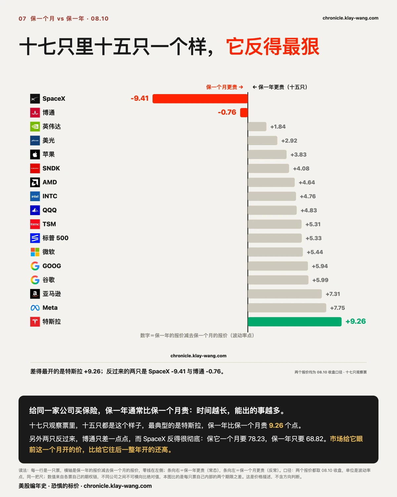
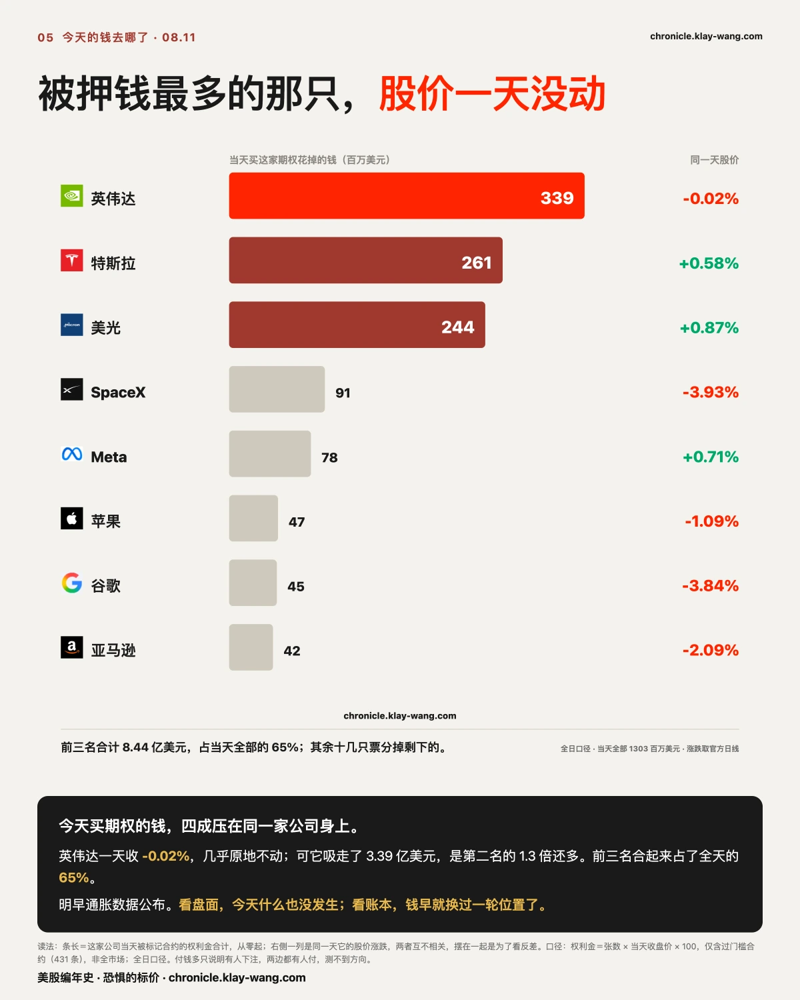
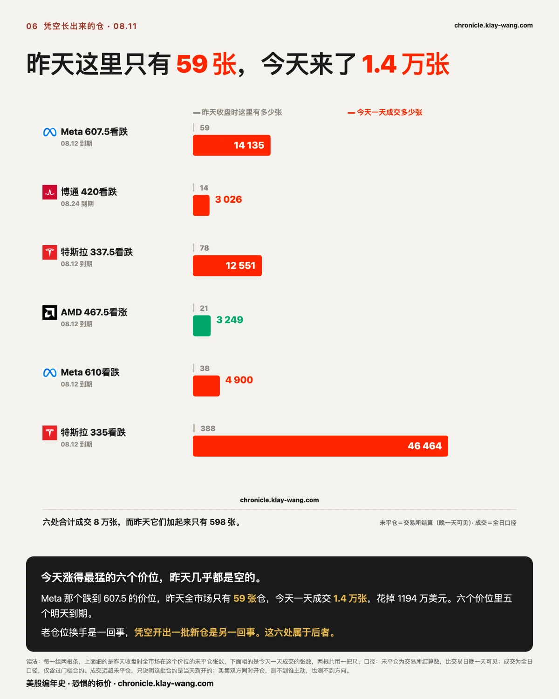
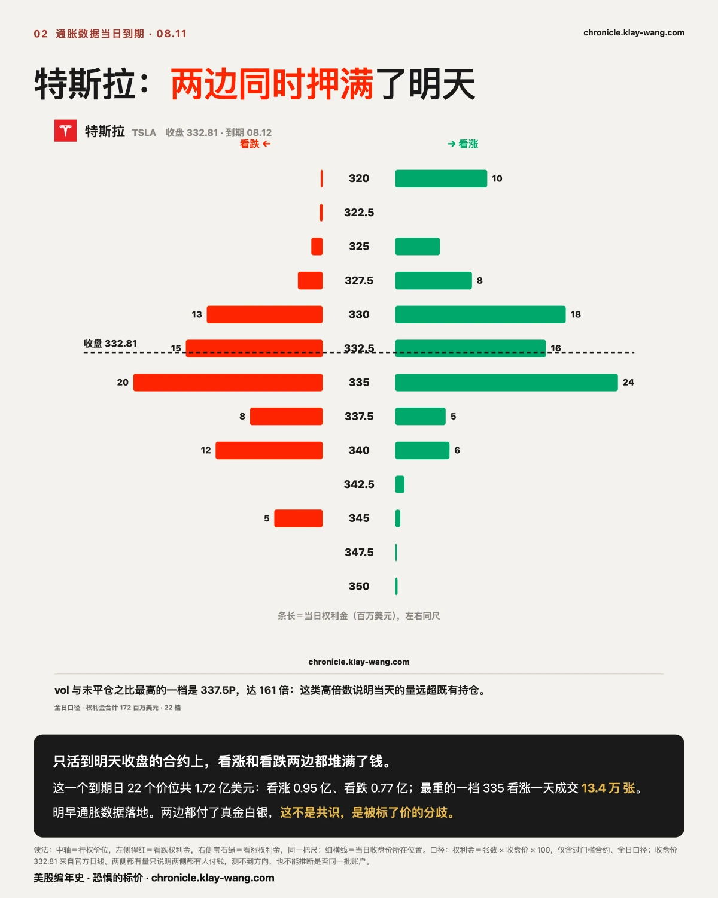
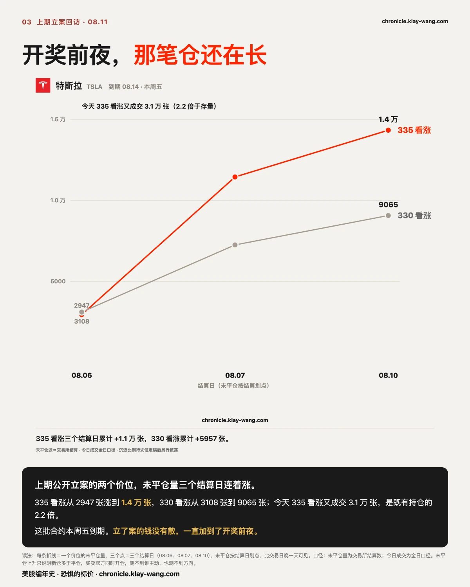
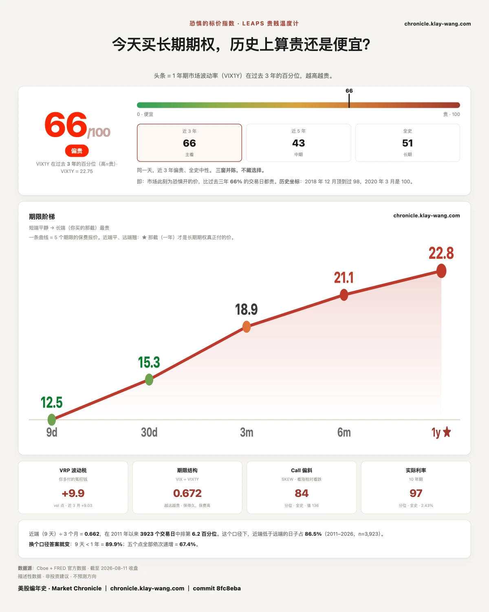

最"危险"的那只票，短期保费居然最便宜？ · 8.10-8.14
⚡ 三行速览
- 今天被标记的期权钱合计 13.0 亿美元，其中 89.3% 押在明天和后天到期的合约上。
- 被押钱最多的是英伟达，3.39 亿美元；而它今天的股价只动了 0.02%。
- 有六个价位昨天全市场加起来只有 598 张仓，今天一天成交 8.4 万张。
这一期讲什么
第 1 节看整个市场的钱押在哪一天。第 2 节把十七只票摆在一起，看一个反常的形状。
第 3 到第 5 节看具体三家公司。第 6 节回来对上一期公开记下的那笔账。第 7 节是每天的温度计。
不着急的话，读完第 1 节和最后一节，今天这个市场大概是什么样，就有数了。

〔大盘 · 到期分布〕这些钱，九成活不过三天
这一节只讲一件事：今天买期权的钱，都押在哪一天到期。不讲谁在买，也不讲会涨会跌。
今天被标记的期权合约，合起来花掉 13.0 亿美元。其中 46.8% 明天到期，42.4% 后天到期，
两天加起来 89.3%。而再往后那个月度到期日，只分到 9.9%。
打个比方。春运抢票，如果你看到所有人都在抢明天那一班，后面整周的车厢空着，
你不用知道他们要去哪，也不用知道他们为什么走，你只需要知道一件事：明天那趟车上会很挤。
明早 08.30 公布七月的通胀数据，后天是生产者价格。这些钱不是押在数据公布之后的世界，
是押在数据公布的那两天本身。
这里要先把一件事说在前面：明天本来就是每周例行的到期日，钱多一点是日历安排，不是新闻。
真正值得看的是同一批钱内部的形状：431 条被标记的合约里，365 条活不过一周。
这个比例不是日历能解释的。
三件套：依据是 431 条合约的到期日分布与权利金合计；推理是排除了日历因素之后，
一周内到期的占比仍然是 85%；可推翻条件是明后两天数据落地后，
如果 08.21 那根柱在本周内明显长起来，说明这批钱只是提前布置、并没有集中在事件那两天。

〔横截面 · 十七只〕十七只里十五只一个样，它反得最狠
这一节不讲任何一天的涨跌，只讲一件事：同一家公司，保未来一个月和保未来一年，哪个报价更高。
先说常态。给同一家公司买保护，保一年通常比保一个月贵，道理很朴素：时间越长，能出的事越多。
十七只观察票里，十五只都是这个样子，其中特斯拉差得最开，一年比一个月高出 9.26 个点。
只有两只反过来。博通只差一点点，可以忽略；而 SpaceX 反得很彻底：保它一个月要 78.23，保一年只要 68.82。
这句话翻译过来是：市场给它眼前这一个月开的价，比给它往后一整年开的还高。
就像一个人告诉你，他觉得下个月会很难熬，但明年反而没那么难。
⚠️ 这里有个口径要说清：这两个报价都是 08.10 收盘那一刻的，不是今天的。
另外不同公司之间不可以横向比绝对值，这张图比的是每只票自己内部的两个期限之差。
三件套：依据是十七只各自的两个期限报价；推理是十五比二这个分布本身说明常态是什么样，
反常的才需要解释；可推翻条件是 08.21 那批合约到期后，如果 SpaceX 这个形状掉回一年那份的下方，
说明它只是被那一批短期合约撑起来的，不是对未来一个月的定价。

〔个股 · 谁被押最多〕被押钱最多的那只，股价一天没动
这一节只讲钱的分布，不讲哪家公司更好，也不讲谁会涨。
今天买期权的钱，四成压在同一家公司身上：英伟达，3.39 亿美元，是第二名的 1.3 倍还多。
前三名（英伟达、特斯拉、美光）加起来占了全天的 65%。
有意思的是它当天的股价：收盘只动了 0.02%，几乎原地不动，是当天最平静的一只。
这就像一家店，门口一个排队的人都没有，你路过会觉得今天生意冷清。
可后厨的订单机一直在响。看盘面，今天什么也没发生；看账本，钱早就换过一轮位置了。
要说清楚的是：付钱多只说明有人下注，买的和卖的两边都在付钱，从这个数看不出方向。
它能告诉你的只有一件事：市场认为接下来这两天，这几家公司身上会有事情发生，
而且愿意为这个判断掏钱。

〔个股 · 凭空长出来的仓〕昨天这里只有 59 张，今天来了 1 万 4
这一节讲的是“新开的仓”和“老仓换手”的区别。这个区别很重要，值得单独讲一节。
先解释这两件事有什么不一样。同一个价位上，如果今天成交的量远远小于已经存在的持仓，
那多半是老仓位在互相转手，市场的总仓位没变。但如果今天成交的量是原有持仓的几十倍，
那就只有一种可能：这批仓位昨天还不存在，是今天才被开出来的。
今天涨得最猛的六个价位，昨天几乎都是空的：
- Meta 那个跌到 607.5 的价位，昨天全市场只有 59 张仓，今天一天成交 1 万 4135 张
- 特斯拉那个跌到 337.5 的价位，昨天 78 张，今天 1 万 2551 张
- 博通那个跌到 420 的价位，昨天 14 张，今天 3026 张
六处合起来，昨天只有 598 张，今天来了 8 万 4325 张。 六个里有五个明天到期。
打个比方。你每天路过同一个市场，有个摊位一直空着。今天你再路过，那个摊位堆满了货，
而且明天就收摊。你不知道摊主要卖给谁，但你知道这批货是今天才运来的。
⚠️ 同样要说清楚：成交远超未平仓，只说明这批合约是当天新开的。
买方和卖方是同时开仓的，测不到谁主动，也测不到方向。

〔个股 · 特斯拉〕两边同时押满了明天
这一节只讲特斯拉一个到期日上的结构，不讲它的车、不讲它的财报。
只活到明天收盘的那批合约上，特斯拉 22 个价位一共 1.72 亿美元：
看涨 0.95 亿，看跌 0.77 亿。 最重的一档是 335 看涨，一天成交 13.4 万张。
看图会发现，收盘价那条虚线上下，两边的条都很长。这不是共识，是被标了价的分歧。
用一个更直白的说法：同一场比赛，买主队赢的和买客队赢的人一样多，
而且都是今天才下的注，赌局明天就开。
顺带记一个数：特斯拉保一个月的报价，在它自己过去 52 周里排第 1.6 位（08.10 收盘口径）。
一年里 98% 的日子，这个报价都比现在高。便宜的时候，用的人往往更多，这两件事今天同时出现了。

〔对账 · 上一期〕开奖前夜，那笔仓还在长
这一节是回头对账：08.07 我们公开记下过两个价位，说要盯着它们到期。今天是它们到期的前夜。
当时记下的是特斯拉本周五到期的 330 和 335 两个看涨价位。三个结算日下来：
- 335 看涨：2947 张 → 1 万 1446 张 → 1 万 4332 张
- 330 看涨：3108 张 → 7250 张 → 9065 张
今天 335 那一档又成交 3 万 1228 张，是既有持仓的 2.2 倍。
立了案的钱没有散，一直加到了开奖前夜。
还有两件今天要如实交代的：
第一，另外四个价位（SpaceX 那批）今天的读数是缩的，其中两个是净平仓。
同一批立案，一半在加、一半在撤，这个结果我们照实记下，不挑好看的说。
第二，沉淀率那组百分比我们今天还不发。 上一期挂着一个待验的假设，
今天已经验证收敛了，但完整的凭证还在整理，在凭证齐之前，数字宁可不发。
未平仓的绝对变化是无论如何都成立的，上面那两行就是。
⚠️ 未平仓上升只说明新开的仓多于平掉的仓，买卖双方同时开仓，测不到谁主动、也测不到方向。

〔大盘 · 恐惧的标价〕连升两天，今天停住了
这一节不涉及任何一只票，只看整个市场为未来一年的不确定性付多少钱。
先说这个数是什么。市场上有一批人必须每天给“未来会不会剧烈波动”开价，开错了要自己赔钱。
这个指数量的就是他们给未来一年开的价，在过去三年里排第几。
2026.08.11 的读数是 66 分（满分 100）。
上一期我们挂了一个问题：这个数连着两个交易日在涨，接下来是继续涨还是回头。
答案是：停住了。 从 65.9 回落到 65.5，动了 0.4 分。这个变动很小，但方向变了，
上一期那句“继续回”到今天为止。
同一时点，五个期限的报价排成一条上坡：9 天 12.52，3 个月 18.91，6 个月 21.10，1 年 22.75。
越远越高，这是常态。
关你什么事： 这个数字不是给买保护的人看的，是给卖保护的人开的价。
它不告诉你明天涨还是跌，它告诉你：那批必须为未来一年报价、并且报错了要赔钱的人，今天报了多少。
恐惧的标价指数（Fear-Price Index）· 2026-08-11 · 读数 66/100：一年期波动率 VIX1Y 为 22.75，处于近三年第 66 百分位，高即贵。逐日台账与口径 → chronicle.klay-wang.com · 转载注明：恐惧的标价指数 · Market Chronicle
下一期回来对三件：明天的通胀数据落地后，那 89.3% 的钱是兑现了还是白付了；
特斯拉本周五那批合约的最终未平仓；以及长端这次停住之后，是接着降还是重新往上。
本站不提供投资建议，不预测方向，不做择时。